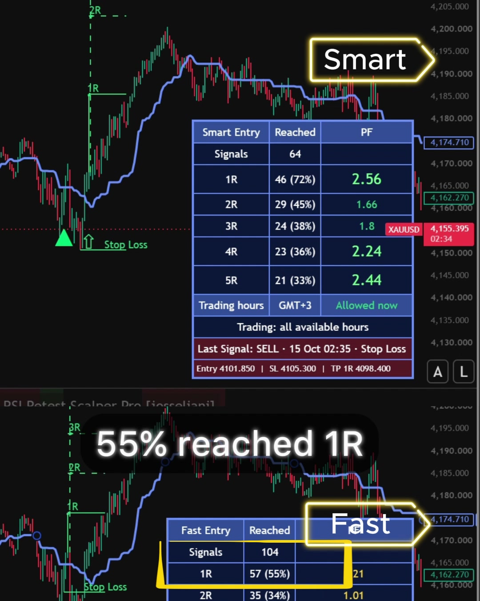

REVERSAL CLOUD CHANNEL
RCC Pro
Видеть канал. Находить сетап. Рассчитывать риск.
ИНДИКАТОРЫ ДЛЯ TRADINGVIEW · JOSSELIANI
Замечайте сетап, настраивайте уведомления и возвращайтесь к графику, когда есть что оценить. Два помощника, с которыми проще разобраться во входе.
Видеть канал. Находить сетап. Рассчитывать риск.
Следить за ретестом. Выбирать подтверждение. Получать уведомление.
Реальные записи графиков. Примеры показывают работу интерфейса, а не будущую доходность.
НОВОЕ ВИДЕО · YOUTUBE
 17:00
17:00Новые разборы индикаторов на русском выходят на канале IndicatorLab.
RCC PRO / НАСТРОЙТЕ ПОД СЕБЯ
Выберите сочетание режимов и ограничьте торговые часы. Следите за сигналами по своим правилам, а результаты оценивайте в таблице.
Не нужно менять всё подряд.
Начните с главного.

Фрагменты реальных экранов настроек.
RCC PRO / СТАТИСТИКА СИГНАЛОВ
Выберите комбинацию режимов и часы торговли, затем оценивайте сигналы на истории. Таблица показывает количество сделок, Win Rate и Profit Factor — чтобы сравнивать настройки на конкретном инструменте.
RCC PRO / ПОПРОБУЙТЕ РАСЧЁТ
Введите цены и риск. Узнайте объём до открытия сделки. В RCC Pro калькулятор риска находится прямо на графике.
Особенно удобно, когда важно соблюдать заданный риск, в том числе при прохождении проп-счёта.
Попробуйте калькулятор здесь ↓
НАЧНИТЕ БЕСПЛАТНО. БОЛЬШЕ ВОЗМОЖНОСТЕЙ С PRO.
| Возможность | RCC · Бесплатный | RCC Pro |
|---|---|---|
| Канал и контекст разворота | Есть | Есть |
| Торговые сигналы | — | Есть |
| Статистика сигналов | — | Есть |
| Риск и расчёт объёма | — | Есть |
RSI BOTTOM/TOP RETEST SCALPER PRO
Первый экстремум RSI — только начало. Сравните Fast и Smart Entry, настройте линию Kijun или другую линию подтверждения и окно ожидания под свой инструмент.
БЕСПЛАТНЫЙ RSI И RSI PRO
| Возможность | RSI Retest · Free | RSI Retest · Pro |
|---|---|---|
| Логика сетапа | Экстремум RSI → охлаждение → ретест → подтверждение цены | Ретест с вариантами Fast и Smart Entry |
| Линия подтверждения | Выбор линии подтверждения | Дополнительная настройка подтверждения и окна ожидания |
| Исторические результаты | Оценка сигналов на графике | Статистика достижения целей и подробности сделок |
| Уведомления | Базовые условия, если доступны | Настраиваемые сигналы по выбранным условиям |
| Начать | Открыть бесплатный ↗︎ | Посмотреть Pro ↓ |
ПОДХОД, КОТОРЫЙ СТАНЕТ ВАШИМ
Меняйте параметры линии, окно ожидания и торговые часы. Смотрите, как меняются статистика и число сигналов. Так вы выбираете условия по данным, а не по одному красивому входу.
Результат на истории зависит от рынка, периода и настроек. Изменение параметров не гарантирует улучшения будущих сделок.

ВЫБЕРИТЕ ДОСТУП
Подписка на TradingView
RCC Pro + RSI Retest Scalper Pro в одной подписке
Оплата картой РФ / СБП
Тот же доступ к RCC Pro и RSI Retest Scalper Pro через lava.top. Доступ откроем по вашему логину TradingView.
Вопросы по оплате и доступу? Telegram ↗︎
Индикаторы помогают принимать решения, но не гарантируют прибыльные сделки.
ОТЗЫВЫ ТРЕЙДЕРОВ
Реальные комментарии с TradingView и Whop. Оригинал и перевод.
ОБЗОРЫ И МЕЖДУНАРОДНЫЕ ПУБЛИКАЦИИ
Обзоры бесплатных индикаторов, переносы на другие платформы и технические сравнения. У каждой публикации — ссылка на оригинал.
Разные источники и разные виды проверки.
Оценки относятся к указанным индикаторам.
Техническое совпадение расчётов не подтверждает прибыльность. Публикации не означают партнёрство с их авторами. Материалы из пресс-пакета за октябрь 2026 года.
БЕСПЛАТНЫЕ ИНДИКАТОРЫ
Откройте страницу индикатора в TradingView, прочитайте описание и нажмите «Использовать на графике».
METATRADER 5 / БЕСПЛАТНО
Colored TMA Trend Signals — цветная TMA, дополнительные полосы и подтверждённые сигналы BUY/SELL.
О НАС И НАШЕМ ПОДХОДЕ
Мы — команда трейдеров и разработчиков с многолетним опытом работы на финансовых рынках.
Мы создаём инструменты на основе собственной торговой практики, анализа рынка и исторических данных.
Наша цель — сделать сложные рыночные процессы понятнее для вас, а ваши торговые решения — более осознанными.
EDUCATION & MARKET REVIEWS
Авторские разборы и учебные материалы. Исторические примеры, а не текущие торговые рекомендации. Публикации TradingView — на английском.
Сетап 1:3.5 во вторник, две цели в четверг, один сигнал Expansion — и две цели, которые мы не засчитали, и почему.
Читать обзор →Движения от границы к границе, сигналы Expansion, один стоп и контртрендовый сетап на сильном падении. Обзор на английском.
Читать обзор (EN) →Сигналы Return и Expansion на минутном графике с настройками по умолчанию. Обзор на английском.
Читать обзор (EN) →Дивергенция предупреждает об ослаблении импульса. Подтверждение ищем в пробое локальной структуры цены.
Читать обзор на TradingView ↗︎Пример работы с RSI на Bitcoin из авторского ролика. Посмотрите условия на графике и объяснение подхода.
Win rate показывает долю прибыльных сделок, но не размер выигрышей и потерь. Profit Factor сравнивает сумму прибыли закрытых сделок с абсолютной суммой убытков.
Profit Factor = сумма прибылей ÷ сумма убытков
Условный пример: шесть сделок по +$100 и четыре по −$200. Win rate — 60%, но PF = 600 ÷ 800 = 0,75. Прибыльных сделок больше, а итог выборки отрицательный.
Плановое соотношение риска и прибыли описывает отдельный сетап. Profit Factor — результаты выборки. Один показатель не заменяет другой. Также смотрите число сделок, просадку, издержки и результаты на разных периодах.
TradingView: Profit Factor ↗︎ПЕРЕД ПОКУПКОЙ
RCC Pro — если вам нужен адаптивный канал, сигнальная логика и расчёт риска. RSI Pro — если вы работаете с экстремумами RSI, ретестами и подтверждением входа.
Для обоих продуктов подготовлены инструкции на русском и английском с настройками и примерами. Основные ролики — на русском. Отдельная демонстрация калькулятора риска — на английском.
Она зависит от инструмента, таймфрейма, периода и параметров. Используйте её для сравнения условий, учитывайте число сигналов и проверяйте подход на других периодах.
Оба Pro-продукта на этой странице предназначены для TradingView. Бесплатная версия Colored TMA Trend Signals для MT5 находится в отдельном разделе.
ВАШ ГРАФИК. ВАШ ПЛАН.